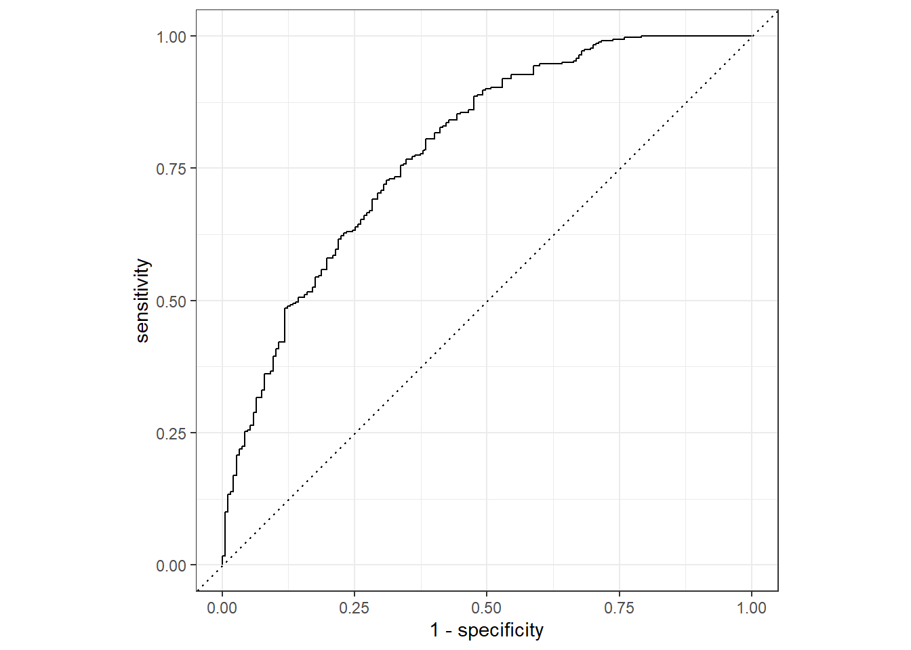

── Conflicts ────────────────────────────────────────── tidyverse_conflicts() ──
✖ dplyr::filter() masks stats::filter()
✖ dplyr::lag() masks stats::lag()
ℹ Use the conflicted package (<http://conflicted.r-lib.org/>) to force all conflicts to become errors
# Fix the random numbers by setting the seed # This enables the analysis to be reproducible when random numbers are used set.seed(222)# Put 3/4 of the data into the training set data_split <-initial_split(d1, prop =3/4)# Create data frames for the two sets:train_data <-training(data_split)test_data <-testing(data_split)# Initial a new recipeNausea_rec <-recipe(Nausea ~ ., data = train_data) # Fit a model with a recipelr_mod <-logistic_reg() %>%set_engine("glm")Nausea_wflow <-workflow() %>%add_model(lr_mod) %>%add_recipe(Nausea_rec)Nausea_wflow
Warning: Returning more (or less) than 1 row per `summarise()` group was deprecated in
dplyr 1.1.0.
ℹ Please use `reframe()` instead.
ℹ When switching from `summarise()` to `reframe()`, remember that `reframe()`
always returns an ungrouped data frame and adjust accordingly.
ℹ The deprecated feature was likely used in the yardstick package.
Please report the issue at <https://github.com/tidymodels/yardstick/issues>.

#get the value of ROCNausea_aug %>%roc_curve(truth = Nausea, .pred_No)
#Alternative model# This enables the analysis to be reproducible when random numbers are used set.seed(222)# Put 3/4 of the data into the training set data_split <-initial_split(d1, prop =3/4)# Create data frames for the two sets:train_data <-training(data_split)test_data <-testing(data_split)# Initial a new recipeNausea_rec <-recipe(Nausea ~ RunnyNose, data = train_data) # Fit a model with a recipelr_mod <-logistic_reg() %>%set_engine("glm")Nausea_wflow <-workflow() %>%add_model(lr_mod) %>%add_recipe(Nausea_rec)Nausea_wflow
####################################################################### This section added by NICOLE LUISI ########################################################################## Prep new testing and training setsset.seed(222)data_split_part2 <-initial_split(d1, prop =3/4)train_data_part2 <-training(data_split_part2)test_data_part2 <-testing(data_split_part2)# Reciperec_part2 <-recipe(BodyTemp ~ ., data = train_data_part2) # Set engineln_mod_part2 <-linear_reg() %>%set_engine("lm")# Workflowwflow_part2 <-workflow() %>%add_model(ln_mod_part2) %>%add_recipe(rec_part2)# Prepare recipe and train model mod10_fit_part2 <- wflow_part2 %>%fit(data = train_data_part2)# Pull fitted model object, get model coefficientsmod10_fit_part2 %>%extract_fit_parsnip() %>%tidy()
options(warn=1) # Model fit with RMSEmod10_aug_part2 %>%rmse(truth = BodyTemp, .pred) # 1.15
# A tibble: 1 × 3
.metric .estimator .estimate
<chr> <chr> <dbl>
1 rmse standard 1.15
# Model fit with R^2mod10_aug_part2 %>%rsq(truth = BodyTemp, .pred) #0.05
# A tibble: 1 × 3
.metric .estimator .estimate
<chr> <chr> <dbl>
1 rsq standard 0.0456
# Model with main predictor# Reciperec_part2b <-recipe(BodyTemp ~ RunnyNose, data = train_data_part2) # Set engineln_mod_part2b <-linear_reg() %>%set_engine("lm")# Workflowwflow_part2b <-workflow() %>%add_model(ln_mod_part2b) %>%add_recipe(rec_part2b)# Prepare recipe and train model mod10_fit_part2b <- wflow_part2b %>%fit(data = train_data_part2)# Pull fitted model object, get model coefficientsmod10_fit_part2b %>%extract_fit_parsnip() %>%tidy()
# Model fit with RMSEmod10_aug_part2b %>%rmse(truth = BodyTemp, .pred) # 1.13
# A tibble: 1 × 3
.metric .estimator .estimate
<chr> <chr> <dbl>
1 rmse standard 1.13
# Model fit with R^2mod10_aug_part2b %>%rsq(truth = BodyTemp, .pred) # 0.24
# A tibble: 1 × 3
.metric .estimator .estimate
<chr> <chr> <dbl>
1 rsq standard 0.0240
Predict in alternative model
Summary
In the model using all predictors, area under the curve is 0.787 for train_data. It’s a fine model. For test_data, that’s 0.724. It’s fine as well.
In the model using the main predictor, area under the curve is 0.519 for train_data. So, this isn’t a good model. For test_data, that’s 0.466. This indicate that isn’t a good model.
This section added by NICOLE LUISI
Note: Following setup started by Yao, the code for part 2 was added to the modeleval.R script in the same folder that is called at the beginning of this Quarto file.
Summary: Model with all predictors is better. The RMSE is similar here, but the model with all of the predictors has a higher r-squared.